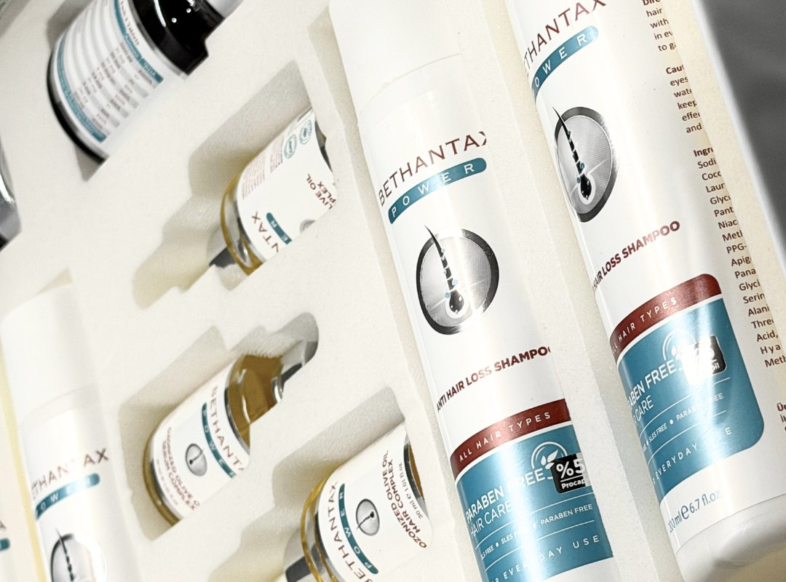

DHI
DHI uses implanter pens for direct graft placement and is often considered when hairline refinement or controlled placement in selected zones is important.
Hair transplant
Hair transplant is not only about choosing DHI, FUE, or Sapphire FUE. The correct plan depends on donor strength, scalp pattern, hair caliber, the target zones that need coverage, and whether the patient's expectations fit the available graft resources.
Front, top, sides, crown, and donor photos are used to structure the first review.
DHI, FUE, and Sapphire FUE are chosen according to the case, not marketed as one-size-fits-all.
Technique overview
DHI uses implanter pens for direct graft placement and is often considered when hairline refinement or controlled placement in selected zones is important.
FUE is built on individual follicular extraction from the donor area and remains a flexible option across a broad range of recession and thinning patterns.
Sapphire FUE follows the FUE extraction principle while using sapphire blades during channel opening in cases where that channel strategy is considered helpful.
The technique label alone does not decide the outcome. Hairline design, donor management, graft distribution, and aftercare discipline matter just as much as the extraction and placement method.
Who may be a good candidate
Frontal recession, mid-scalp thinning, and crown loss need different graft distribution strategies and may not be approached the same way.
Donor density, hair thickness, and donor stability determine how much coverage can be attempted safely and realistically.
The target hairline and density should remain realistic for the available donor supply rather than being based on an idealized image.
Age, family pattern, active hair loss, medication, and previous procedures can all affect whether immediate transplant planning is suitable.

What affects the plan
A lower hairline is not automatically better. The design should fit age, facial structure, future hair loss, and donor safety.
A case focused on temples is very different from one that includes the frontal zone, mid-scalp, and crown together.
The donor area should be protected for long-term appearance, especially in larger cases or patients with progressive loss.
Scar tissue, previous extraction patterns, or an overused donor area may change both technique choice and the final density goal.
Treatment stages
The first review checks the donor area, recession pattern, crown status, and the target coverage zones from a complete photo set.
The case is broken down into priority zones, expected graft allocation, and whether the goal is refinement, density, or broader coverage.
On treatment day the case moves through donor extraction, graft preparation, recipient planning, and controlled placement.
The first wash, medication routine, swelling guidance, and early photo follow-up shape the first recovery phase.
Patients should expect an initial shedding phase before new growth begins over the following months.
Density and maturation develop progressively. Final judgment should wait until the growth cycle has matured.
Procedure gallery

Clinical workflow during placement under controlled lighting and sterile room setup.

Closer procedure detail showing the precision required during the placement stage.
Clean room setup used for consultation, treatment, and post-procedure monitoring.
Recovery and aftercare
The patient should know when the first wash starts, how lotion or foam is used, and how gently the scalp should be handled.
Redness, swelling, scabbing, and early shedding are part of the expected discussion before the patient leaves the treatment phase.
Position during sleep, sun exposure, exercise limits, and scalp contact rules all matter in the first recovery window.
Aftercare products are secondary to the clinical routine, but they help standardize cleansing and early recovery habits.

A structured set of cleansing and support products for the early recovery phase.

Product guidance helps patients follow a consistent post-treatment routine at home.


FAQ
Front, top, both sides, crown, and donor area photos are the minimum for a useful first assessment.
The decision depends on the donor area, hairline goals, scalp pattern, hair caliber, and how the case should be distributed across the target zones.
Sometimes yes, but it depends on donor strength and the relative priority of the frontal zone, mid-scalp, and crown. A full photo set is needed first.
Yes. Washing, redness, swelling, shedding, and the early follow-up steps are part of the consultation process.
Yes. WhatsApp is the fastest route for sending the first photo set and receiving the next clear step.
Hair consultation
One complete set of photos is usually enough to start the hairline, donor, and technique discussion properly.